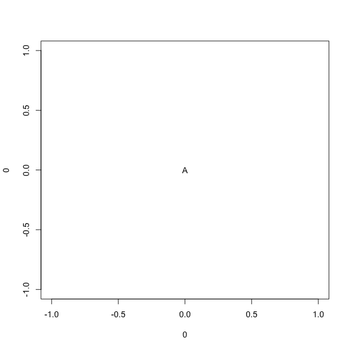
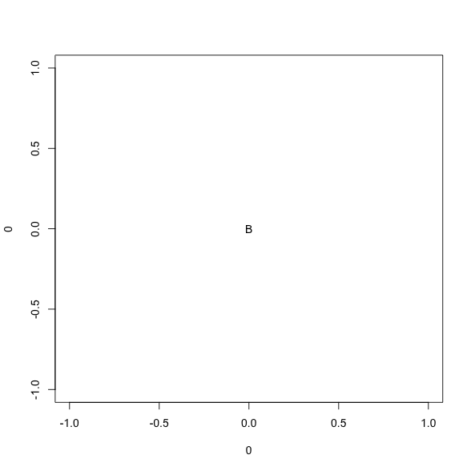

Interleave plots with text output:
for(i in 1:3) {
cat('\n## ', LETTERS[i], '\n\n')
plot(0, 0, pch = LETTERS[i])
}
1 A

2 B

Interleave plots with text output:
for(i in 1:3) {
cat('\n## ', LETTERS[i], '\n\n')
plot(0, 0, pch = LETTERS[i])
}

